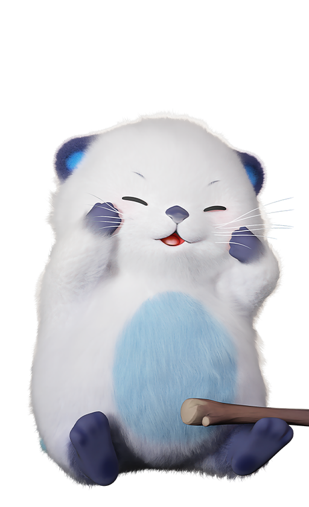
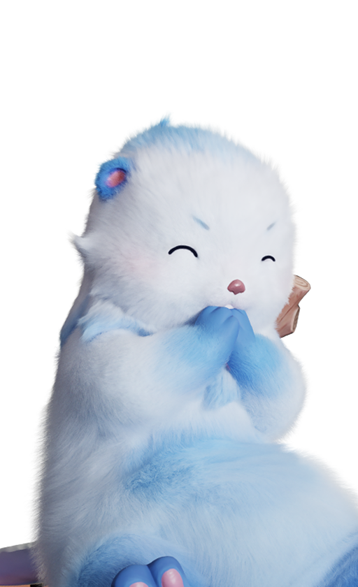
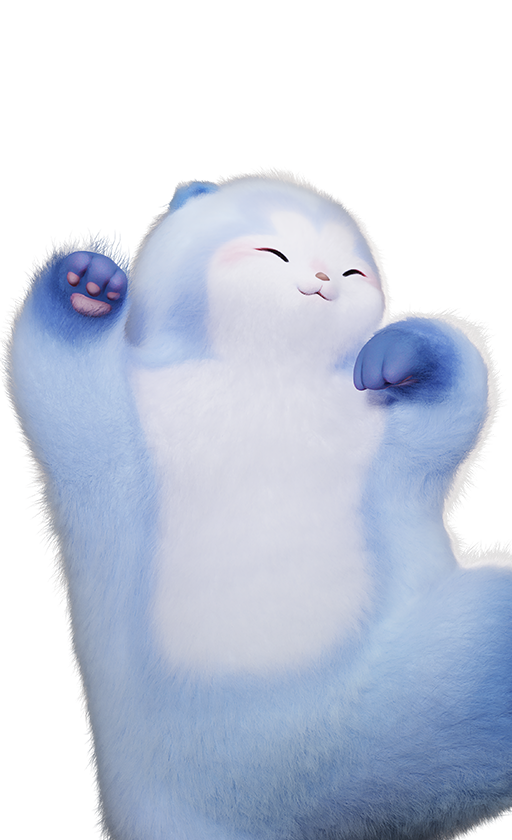
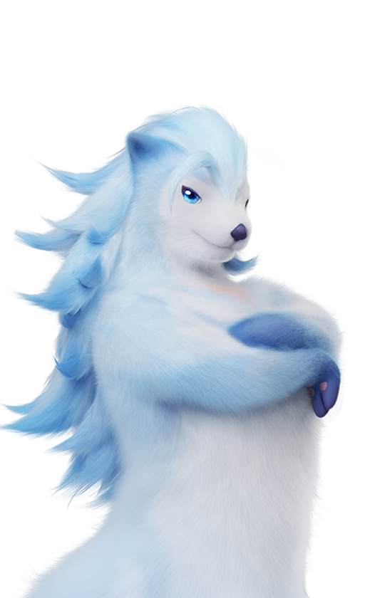

애니모 조합 수줍달 계열 성별 짝, 뽐내기랑 매력 발산 켜지는 조건
애니모 위키에서 수줍달 계열 특성 문구를 보다가 '성별이 다른 수줍달 계열 파티원이 있으면'이라는 조건이 눈에 들어왔어요. 조합을 짤 때 걸리는 조건이라서, 오늘은 수줍달 계열을 파티에 넣을 때 뽐내기와 둥실달의 매력 발산이 각각 어떤 조건에서 켜지는지만 편성 관점으로 풀어볼게요. 한 줄로 먼저 말하면, 뽐내기는 성별이 다른 수줍달 계열 파티원이 있을 때 붙는 효과이고 매력 발산은 파티 안에 성별이 서로 다른 애니모가 있어야 켜지는 걸로 읽혀요. 10월 4일 공식 위키 문구, 정식 출시판 v1.0.3629693.0 기준이에요.
애니모 수줍달 계열은 어떤 애니모들이에요
수줍달 계열은 수줍달(유년기)과 보글달(성장기)을 거쳐 둔둔달·둥실달(성숙기)로 갈라지는 물 원소 4종이고, 둥실달만 서포터이고 나머지는 격파 포지션이에요.
| 이름 | 단계 | 포지션 | 특성 |
|---|---|---|---|
| 수줍달 | 유년기 | 격파 | 뽐내기 |
| 보글달 | 성장기 | 격파 | 뽐내기 |
| 둔둔달 | 성숙기 | 격파 | 뽐내기 |
| 둥실달 | 성숙기 | 서포터 | 매력 발산 |


수줍달(왼쪽)·보글달(오른쪽) · 출처: 애니모 공식 위키
표에서 보이듯 세 마리는 똑같은 뽐내기를 쓰고 둥실달만 따로 놀아요. 보글달이 둥실달로 가려면 39레벨에 이성 수줍달에게 다가가 따라오게 하고 물결석 1개가 필요한데, 자세한 진화 조건은 '애니모 진화 조건 총정리' 글에 따로 적어뒀어요.
애니모 뽐내기는 언제 켜지나요
뽐내기는 수줍달·보글달·둔둔달이 가진 특성으로, 자신이 등장할 때 파티에 성별이 다른 수줍달 계열 파티원이 있으면 몸이 핑크색으로 변하면서 무력화 효율이 30% 증가하는 효과예요.

둔둔달 · 출처: 애니모 공식 위키
위키 문구를 풀어 보면 이렇게 나뉘어요.
- 짝 : 성별이 다른 수줍달 계열 파티원
- 혜택 : 특성을 가진 본인의 무력화 효율 30% 증가
- 시간 : 15초 지속, 쿨타임 20초
쿨타임을 발동 시점부터 센다고 보면 20초 한 바퀴 중 15초가 켜져 있으니 가동률은 75% 정도예요. 효과가 끝난 뒤부터 센다면 숫자가 달라지니까, 문구만 놓고 계산한 값이지 실전 수치는 아니에요.
'등장할 때'라는 표현이 붙어 있어서 교체로 다시 나올 때마다 켜지는지 궁금해지는데, 이건 확인하지 못했어요.
그리고 짝으로 치는 '수줍달 계열 파티원'에 둥실달이 들어갈까요? 진화 계보로는 같은 계열이거든요.
확인 위치: 둥실달과 이성 수줍달·보글달·둔둔달을 함께 편성했을 때 뽐내기 발동(핑크색 변화) 여부 · 확인되면 이 자리에 채워주세요.
둥실달 매력 발산은 뭘 올려주나요
둥실달의 매력 발산은 파티 안에서 성별이 서로 다른 모든 애니모의 물 원소 강화를 16% 증가시켜 줘요.

둥실달 · 출처: 애니모 공식 위키
뽐내기와 다른 점이 눈에 띄어요. 뽐내기는 '수줍달 계열'이라고 상대를 좁혀 놓았는데, 매력 발산 문구에는 계열 이야기가 없고 '성별이 서로 다른 모든 애니모'라고만 되어 있거든요. 문구만 보면 성별이 갈리는 짝이 파티에 있으면 수줍달 계열이 아니어도 대상이 되는 쪽으로 읽혀요. 특성 이름만 한 줄로 지나간 '애니모 특성 총정리' 글에서 못 다룬 부분이 이 대목이에요.
16%가 더하기인지 곱하기인지, 수컷과 암컷 중 누구에게 걸리는지는 아직 확인 전이에요. 문구에서 확인되는 건 '성별이 서로 다른 모든 애니모'의 '물 원소 강화'라는 표현까지예요.
4마리 파티에서 성별 짝은 어떻게 맞추나요
4마리 파티라면 수컷과 암컷 수줍달 계열을 한 쌍만 넣어도 뽐내기 조건이 맞고, 거기에 둥실달을 더해 성별이 섞이면 매력 발산 조건도 맞는 구조예요.
전투 파티가 최대 4마리라는 건 국내 체험기·해외 가이드 두 곳이 똑같이 적고 있는데, 공식 문서에서는 인원 서술을 찾지 못했어요. 아래 표는 4마리 기준이고, 위키 문구 기준으로 해석하면 이렇게 된다는 뜻이에요.
| 편성 예시 | 뽐내기 | 매력 발산 |
|---|---|---|
| 수컷 수줍달 + 암컷 수줍달 + 물 원소 애니모 2 | 두 마리 모두 충족 | 둥실달이 없어 해당 없음 |
| 수줍달 계열 수컷만 4 | 성별이 다른 짝이 없어 미충족 | 해당 없음 |
| 수컷 둥실달 + 암컷 물 원소 애니모 + 수줍달 계열이 아닌 애니모 2 | 보유 개체가 없어 해당 없음 | 성별이 서로 다른 애니모가 있어 충족 |
| 수컷 둔둔달 + 암컷 보글달 + 암컷 둥실달 + 수컷 물 원소 애니모 | 둔둔달·보글달이 서로의 짝이라 충족 | 성별이 섞여 있어 충족 |
| 둥실달 + 같은 성별 애니모만 3 | 해당 없음 | 서로 다른 성별이 없어 미충족 |
넷째 줄처럼 짜면 한 파티에서 두 특성 조건이 한꺼번에 충족되니까, 성별 짝을 맞추는 김에 둥실달까지 얹는 편성이 노려볼 만해요 ㅎㅎ
내 애니모 성별은 어디서 보나요
수줍달 계열 4종은 공식 도감 데이터에 수컷과 암컷이 모두 올라 있어서, 파티에서 성별 짝을 맞추는 것 자체는 가능한 구조예요. 다만 이건 이 종에 나올 수 있는 성별 목록이지, 내가 가진 개체가 수컷인지 암컷인지를 알려주는 건 아니에요.
그럼 내 개체의 성별은 게임 안 어느 화면에서 볼 수 있을까요?
확인 위치: 애니모 개체 상세 화면·파티 편성 화면 · 확인되면 이 자리에 스샷과 함께 채워주세요.
진화 조건이랑 헷갈리지 않으려면요
보글달을 둥실달로 키우려면 이성 수줍달이 필요한데, 이건 진화 조건이고 뽐내기·매력 발산은 파티 편성 조건이라 각자 문구대로 따로 봐야 해요.
둘 다 성별이 다른 짝을 묻는 말이라 한 덩어리처럼 느껴지기 쉬워서, 세 가지를 나란히 놓아 봤어요.
| 구분 | 보는 대상 | 조건 | 효과 |
|---|---|---|---|
| 뽐내기 | 특성을 가진 본인 | 성별이 다른 수줍달 계열 파티원 | 무력화 효율 30%, 15초 지속·쿨타임 20초 |
| 매력 발산 | 파티 내 성별이 서로 다른 모든 애니모 | (문구상) 파티 안에 성별이 서로 다른 애니모가 있을 때로 읽힘 | 물 원소 강화 16% |
| 둥실달 진화 | 보글달 | 39레벨 + 이성 수줍달이 따라오게 유도 + 물결석 1 | 둥실달로 진화 |
진화는 이성 수줍달이 따라오게 만드는 행동이고 특성은 파티에 누가 있느냐를 보는 거예요. 성별이 다른 개체 두 마리를 모으려면 포획이나 부화 때 성별이 어떻게 정해지는지도 알아야 하는데, 그건 확인 전이에요. 확인된 건 도감에 수컷·암컷이 모두 올라 있다는 것까지예요.
애니모 수줍달 계열 조합 자주 묻는 질문
Q. 짝을 맞추려고 약한 쪽을 넣으면 손해 아닌가요?
도감 능력치 총합만 보면 수줍달 411, 보글달 471이 둥실달 522, 둔둔달 545보다 낮은 건 맞아요. 다만 이 합계에는 특성 효과가 들어 있지 않아서, 유년기·성장기인 수줍달과 보글달을 짝으로 넣으면 파티 안 다른 자리와 견주게 된다는 점까지만 말할 수 있어요.
Q. 뽐내기 30%는 파티 전원에게 붙나요?
아니요, 특성을 가진 본인의 무력화 효율만 올라요. 짝으로 들어온 이성 파티원이 받는 효과가 아니라, 짝이 있어야 본인이 켜지는 조건이에요.
Q. 영문 위키에는 매력 발산이 물 피해 16%라고 적혀 있던데요?
영문 위키 표기는 'Water damage 16%'이고 한글 공식 문구는 '물 원소 강화'예요. 같은 수치를 뜻하는지 단정할 수 없어서 이 글은 한글 문구로 썼어요.
애니모 수줍달 계열 조합 정리
정리하면 뽐내기는 성별이 다른 수줍달 계열 짝이 같은 파티에 있어야 켜지고, 매력 발산은 파티 안에 성별이 서로 다른 애니모가 있어야 켜지는 걸로 읽혀요. 둔둔달·보글달처럼 성별이 다른 짝에 둥실달까지 섞어 넣으면 4마리 안에서 두 특성을 한 번에 노려볼 수 있고요. 이 표를 편성 메모 삼아 즐겁게 파티 짜 보세요.
✔ 애니모 같이 보기 좋은 내용
· 애니모 그림자 스파클 확률, 스파클 스타일 포획이랑 알쟁탈전 부화 경로별로 갈려요
· 애니모 생활티어표 정식출시판 정리, 홈능력 담당부터 탐사스킬 이동능력까지
· 애니모 전투 티어표 재정리, 정식 출시판 도감 수치로 본 포지션별 추천
참고한 곳 (2026.10.04 기준)
· 애니모 공식 위키 — 수줍달 도감 페이지(뽐내기 특성)
· 애니모 공식 위키 — 보글달 도감 페이지(뽐내기 특성)
· 애니모 공식 위키 — 둥실달 도감 페이지(매력 발산 특성)
· 애니모 공식 위키 — 둔둔달 도감 페이지(뽐내기 특성)
· 인벤 — 애니모 체험기(사전 체험 빌드, 파티 네 마리 언급)
· oslink — Aniimo team building guide(해외)